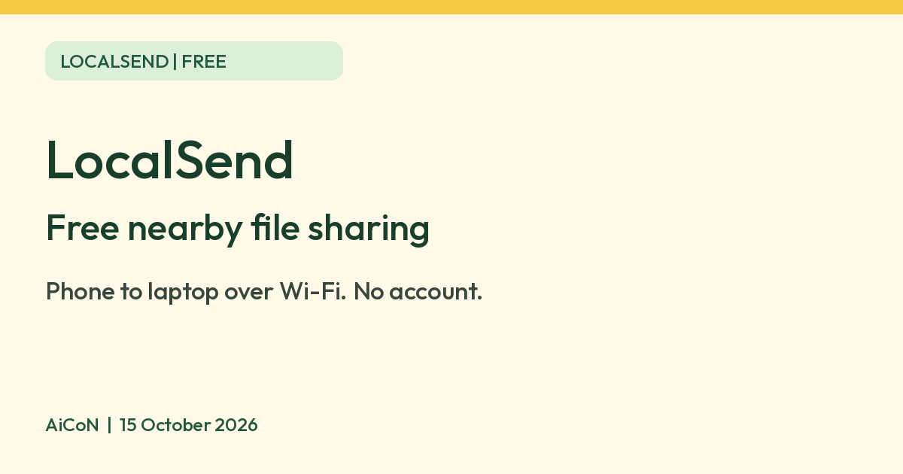

LocalSend: free file sharing between nearby devices, no cloud
LocalSend says it is a 100% free, open source app that sends files between nearby devices over your Wi-Fi, with no account and no cloud upload.

What it is
LocalSend is a free app for sending files between devices that are on the same Wi-Fi network, with no cloud upload. Its developers describe it as "free, open-source" and say it lets you share files and messages with nearby devices without an internet connection. It works across Windows, macOS, Linux, Android and iOS, so it can move photos from an iPhone to a Windows laptop, for example. It is not an AI tool. We included it as a free, official, no-account tool.
Is it free?
Yes. The LocalSend site asks "Is it really free?" and answers: "Yes, LocalSend is 100% free and open source. There are no ads, no tracking, and no hidden costs."
How it works, per LocalSend
- Install it on both devices and open it. The site says there is no account, no login and no servers.
- Choose photos, videos, documents or text, then tap the nearby device.
- Transfers go over your local Wi-Fi network. The site says your data never leaves your local network and it works offline, but both devices need to be on the same network.
- The FAQ says transfers use HTTPS encryption, and you can turn on PIN verification.
- Received files go to the Downloads folder by default, which you can change.
How to get it
- Platforms: Windows, macOS, Linux, Android, iOS and Amazon Fire OS, per the project's GitHub page.
- Where: the GitHub page lists the Microsoft Store, Mac App Store, iOS App Store, Google Play, F-Droid, Amazon Appstore, and installers on GitHub. It recommends an app store or package manager because the app has no auto-update.
- Minimum versions: Android 7.0, iOS 13, macOS 11, Windows 10, per the same page.
- Firewall: if sending fails, the project says to allow incoming TCP and UDP on port 53317.
What to watch out for
- It needs both devices on one network. It does not send over mobile data or the internet.
- Public or guest Wi-Fi, such as in cafes or hotels, may block devices from seeing each other. We did not test this.
- Install it only from the official sources above. The project warns that an "unofficial MSIX preview" exists on another site.
- Only accept transfers you expect, and consider turning on the PIN option.
Privacy and data
- LocalSend's privacy policy (last updated 8 May 2024) says it does not collect, store, process or use any personal or non-personal data while you use the app.
- The policy says your phone's operating system, device maker and other apps may still collect data, and LocalSend does not control that.
India
- We saw no country restriction on the pages we read. We did not test the app listings from India.
Frequently asked questions
Is LocalSend free?
Yes. Its site says it is 100% free and open source with no ads, tracking or hidden costs.
Do I need internet or an account?
LocalSend says no account is needed and no internet is required. Devices need to share a local network.
Which devices work?
Windows, macOS, Linux, Android and iOS, per the project.
Sources: LocalSend homepage, Privacy policy, GitHub README. Checked 15 October 2026.
No LocalSend logo is used in this article. Independent guide, not affiliated.